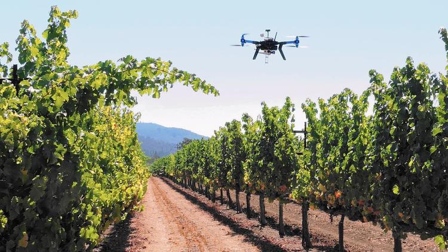

Ryan Kunde is a winemaker whose family’s picture-perfect vineyard nestles in the Sonoma Valley north of San Francisco. But Kunde is not your average farmer. He’s also a drone operator—and he’s not alone. He’s part of the vanguard of farmers who are using what was once military aviation technology to grow better grapes using pictures from the air, part of a broader trend of using sensors and robotics to bring big data to precision agriculture. In Indiana, founded by Matt Minnes in 2012, Precision Drone manufactures unmanned aerial vehicles, or UAVs, that replace the time-consuming method of scouting fields by walking through rows of crops. Minnes formerly worked for a seed company in Indiana when inspiration struck.“I realized that walking hundreds of acres to monitor corn and soybean fields was no way to spot a problem unless you stumbled upon it," he said. |
 |
|---|---|
In short, drones can mechanize every step of farming, eliminating the costs of human errors and enabling farmers to react quickly to threats (such as drought conditions and pests), helping them maximize income and returns on investment in the end. A PricewaterhouseCoopers (PwC) report pegs the agriculture drone market to be worth $32.4 billion, second to infrastructure. Agricultural efficiency is poised to take a big leap with drone technology now that the U.S. Federal Aviation Administration (FAA) is streamlining regulations for unmanned aerial vehicles. Statistics and recent reports suggest that PwC isn't the only one expecting drones to revolutionize agriculture. Bank of America Merrill Lynch projects agriculture to make up almost 80% of the commercial drone market in the future, with the potential to generate $82 billion worth of economic activity in the U.S. between 2015 and 2025. Goldman Sachs predicts the agriculture sector to be the largest user of drones in the U.S. and the second largest in the world in the next five years. Research company Markets and Markets estimates the agricultural drone market to grow at a compounded average rate of 30% through 2022. |
|
 |
MAJOR USES: |
Industry:::Military>>Media And Entertainment >> Transport And Logistics